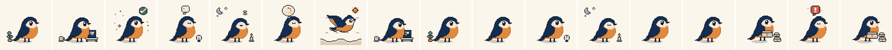

2026-11-13 · 对齐 dsh-Go 的结构语言（源码拆解），纸上鸟 token 落色。WORK 同源承载（D4）与 E2E 案 A（D9）不变。
home_shell.dart：chat 是默认构建，没有仪表盘；会话列表与功能入口住抽屉里。NIBI-GO 同构：打开即在对话里。
palette.dart：页面是顶→底的极淡竖向渐变（彩度 ≤0.019），纯白只给玻璃高光。NIBI 版：#fef8ec → #f3e8d3 + 顶部暖橙极淡光晕。
70% 中性面 + 25% 字与细线 + 强调色 ≤5%——橙只出现在发送键、主按钮（新对话）、选中态、链接、进度。"铺多了就不静了"。
顶栏与输入栏都是玻璃 pill（模糊 + 发丝线 + 软阴影），浮在渐变上；squircle 圆角家族。
「✓ 已完成 · N 次工具调用」可折叠摘要行、交付文件卡、工具行（思考/读取/运行）、用量元信息——消息流本身就是产品。
pet 状态机（敲代码/完成/等确认/睡觉）坐在输入栏上方——NIBI 的鸟对位 D14 桌宠预案，挂起期=睡着。
| dsh-Go 的做法（源码位置） | NIBI-GO 对应 |
|---|---|
| home_shell.dart chat 为默认构建，抽屉承载目的地 | 打开即会话；WORK 从"首页卡片"降为抽屉目的地「桌面」——与 dsh-Go 的 web/remote 同位 |
| palette.dart 极淡竖向渐变 + 玻璃 + 70/25/≤5 | 纸面渐变 #fef8ec→#f3e8d3；橙只给发送键/新对话按钮/选中态（纸上鸟"橙 CTA"语义不变，用量收敛） |
| sessions_drawer.dart 搜索+筛选 chips+时间分组 | 同构：搜索对话 / 全部-运行中-待确认-未读 / 今天-昨天-本周 |
| 会话 chip 内嵌状态（本机 · 生成中/运行中） | 会话 chip = 标题 + 状态灯（挂起/运行中/待确认），目的地切换即 chip 内容切换 |
| 结构化消息：✓ 摘要行 / 交付文件卡 / 工具行 / 用量元 | chat-core 现有 reducer 输出（V4 事件）直接映射这四类渲染件；桌面同源语义走 WORK 承载 |
| pet 状态机（敲码/完成/等确认/睡觉） | NIBI 鸟四态：工作/完成/待审批/睡觉——正好是审批通知（F2-F4）的 in-app 表达；挂起期=睡觉 |
| 排队插话控制（排队中 · 立即发送/改为插话/撤回） | Phase C 后对齐（本轮先不做，列入 C0 UI backlog） |
① 不动 D2/D4/D9：WORK 仍是抽屉目的地 → D4 同源 WebView 载体屏；E2E 仍走原生隧道。② 本稿只重设「GO 主体 + 抽屉」两块原生 UI；载体内一切视觉 = PWA/桌面同源（那不是我们画）。③ theme.ts 仍按纸上鸟 token 建，但吸收 dsh-Go 的渐变纸面与玻璃面规则（写进 token 层：bg-gradient-top/bottom、glass-surface、强调色用量纪律）。④ 深色待启：按 dsh-Go 的口径校准为"暖墨夜"（明度 0.23–0.25 档、非纯黑），现有 #171716 届时上移一档。
素材真源 = nibi-pixel-pet 仓（64×64 原生像素 · 9 状态 · 8 过渡 · 17 动画 142 帧 · 深浅两套；单一数据源 out/pack.json）。本仓已接：app/assets/pet/（sheets / sheets-dark / pack.json 快照，168K）+ app/src/components/PetView.tsx（逐帧时长播放器，过渡播完自动接状态循环；渲染走 @shopify/react-native-skia 且 sampling=Nearest——RN 核心 Image 在 Android 恒为双线性，整数倍放大也糊边，Skia 最近邻才符合素材规格）+ petStates.ts（事件映射）。规格纪律：显示只允许 2×/3×/4× 整数倍最近邻；基线 y=58；逐帧 ms 以 pack.json 为准。

| 状态 | 场景 | App 事件接线（PET_STATE） |
|---|---|---|
| idle | 待机 · 呼吸+绿植 | 会话空闲（连接正常无活动回合） |
| working | 敲代码 · 笔电+咖啡 | 工具执行 / 流式输出中 |
| thinking | 思考云 8 方块绕圈 | 长推理段 |
| done | 落地对勾 + 彩纸 | 回合完成 / 任务完成通知 |
| waiting | …气泡 + 台钟 + 抬头 | 审批卡待操作（验收 D 组的 in-app 表达） |
| error | 红 ! 气泡 + 摇头 | 工具失败 / 连接错误 |
| carrying | 抱纸箱 + 箱堆轻跳 | 文件交付 |
| flying | 云海横滚（唯一无过渡态） | 页面切换 / 深链启动 / 重连（短时态） |
| sleeping | 闭眼 + 月亮 + Zzz | 无连接 / 内核挂起 / 后台 |
位置：宠物永远固定在输入栏正上方（对齐 dsh-Go）——有会话时中间是消息流，宠物不占正文；空态时正文区只放说明文案，宠物仍在输入栏上方。不加地面投影（运营者 2026-11-13 明确去掉）。
三条实现纪律（都是踩过的坑）：① 全部图集预加载——useImage 若跟着 state 走，换状态时新图未解码返回 null，宠物会先消失半拍再出现（"一卡一卡"）；② Skia 绘制必须 Group clip 收死到当前格，否则相邻帧从图集漏出（鸟周围出现多余月亮/碎片）；③ 页面背景用 expo-linear-gradient——Skia 画铺满背景在 Android 上不铺满、会留一个居中矩形；暖光渐变终点须用同 RGB 零 alpha，用 transparent 会留硬边。
模拟器已验：睡觉 / 敲代码（含 enter-working 过渡）/ 等确认 / 思考 四态渲染与播放正常（3× 整数倍，像素锐利），九态连点无白屏；输入栏为单行 pill（+ / 占位 / 发送），不占高度。
规则来自 app/lib/ui/shell/adaptive/adaptive_layout.dart，实现于 app/src/layout/adaptive.ts（纯函数 + 9 条契约测试 app/test/adaptive-layout.test.ts）。
| 窗口 | 栏位计划 | ≡ 键语义 | 本机实测 |
|---|---|---|---|
| compact <600 宽，或 高<480 |
单列；对话列表 = 滑出抽屉 | 开抽屉 | 手机竖屏 ✓ |
| compact + 横屏 915×412 |
单列但横向摊开：鸟左、文案右；输入栏压成单行省高度 | 开抽屉 | 手机横屏 ✓ |
| medium 600–840 |
单列，正文限宽居中（≤760） | 开抽屉 | 平板竖屏 800×1280 ✓ |
| expanded ≥840 |
常驻侧栏 320 + 居中正文；正文保不住 600 时退成 rail（68px 圆键列） | 侧栏：折叠 / rail：展开（放不下则开抽屉） | 平板横屏 1280×800 侧栏 ✓ 折叠成 rail ✓ |
两条上游判断直接沿用：① 断点用短边 + 矮窗规则——手机横屏虽然宽，但状态栏+顶栏+输入栏+键盘吃掉一半，并排两栏每栏只剩一条缝，单列居中才留得住宽度；② 侧栏能不能常驻看正文还剩多少（正文必须留 600），放不下就退 rail，而已是 rail 时 ≡ 改为开抽屉而不是硬展开。
实测路径：手机竖屏（1080×2400）→ 横屏（2400×1080，高 411 < 480 判 compact）→ 平板竖屏（1600×2560 @320dpi = 800×1280，medium）→ 平板横屏（2560×1600 = 1280×800，expanded 侧栏）→ 点 ≡ 折叠为 rail。竖屏顶栏曾被状态栏压住（insets 漏用）已修；横屏输入栏双行改单行；侧栏左缘漏底色带已修。